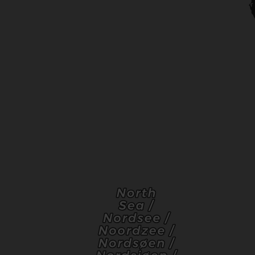
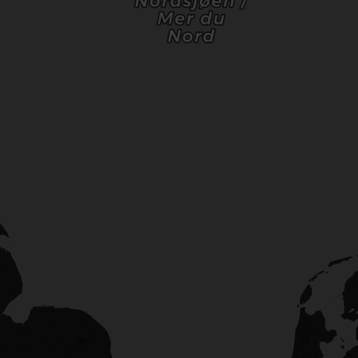
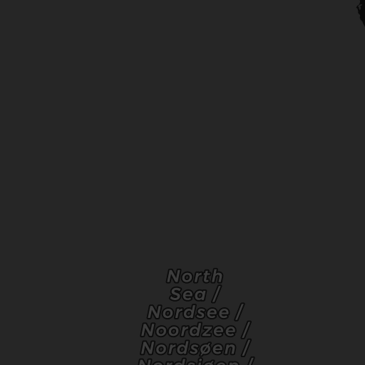
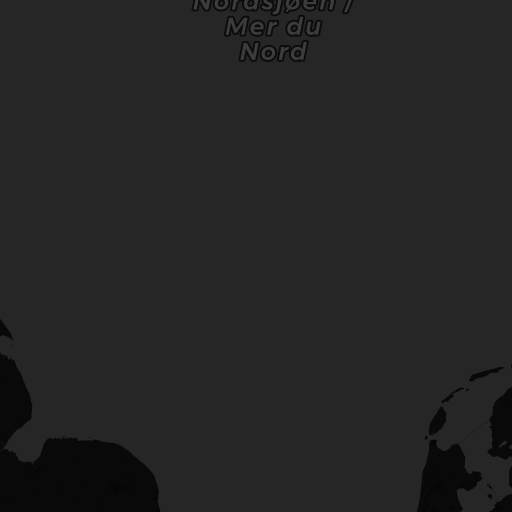

| タリスカー44年オフィシャルボトル | ¥80,400 | Scotland (Isle of Skye) | ★★★★☆ | ★★★☆☆ | ★★★★★ |
| ポートエレン25年 one of only bottles | ¥20,400 | Scotland, Islay | ★★★★★ | ★★☆☆☆ | ★★★★★ |
| マッカラン1990年SAMAROLI | ¥12,200 | Scotland | ★☆☆☆☆ | ★★★★☆ | ★★★★★ |
| ボウモア26年ダンカンテイラー | ¥15,000 | Scotland, Islay | ★★★★☆ | ★★★☆☆ | ★★★★★ |
| 軽井沢25年 | ¥25,000 | Japan | ★★☆☆☆ | ★★★★☆ | ★★★★★ |
| ã‚ルホーãƒãƒ³2013-2021信濃屋 | ¥2,000 | Scotland, Islay | ★★★★★ | ★★☆☆☆ | ★★★★☆ |

 
